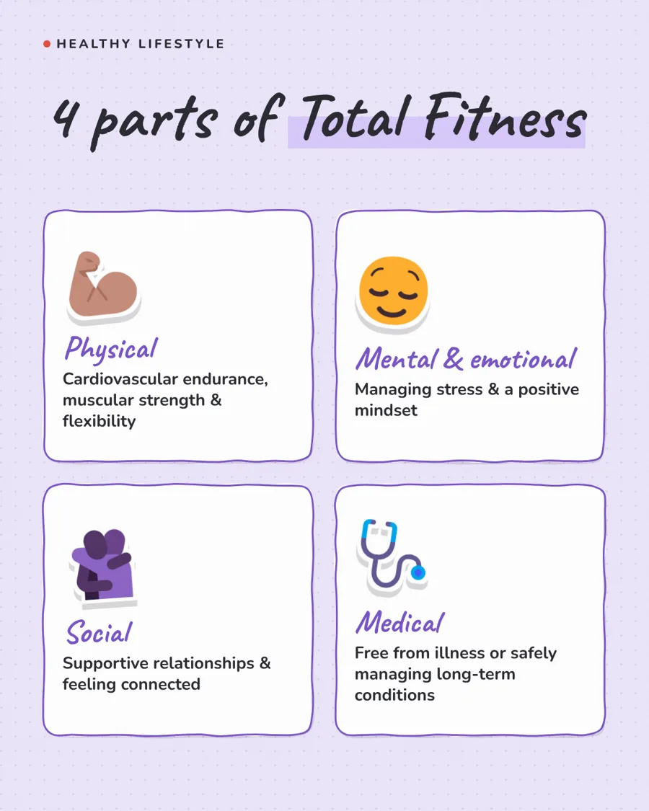
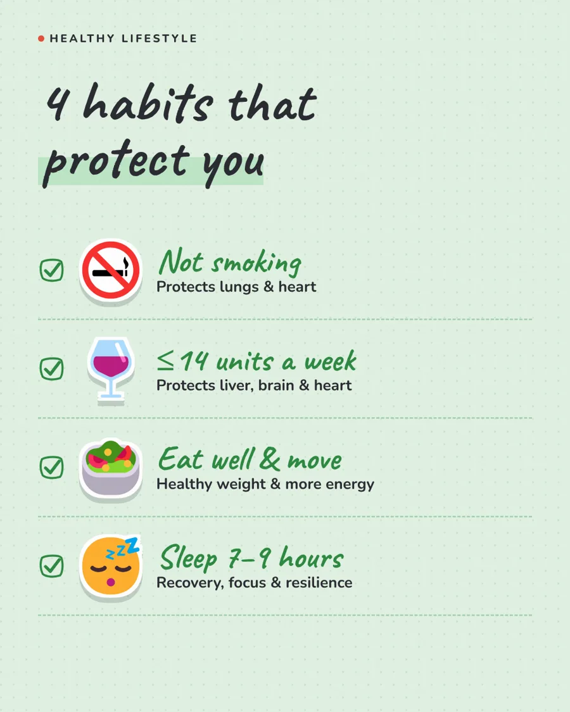
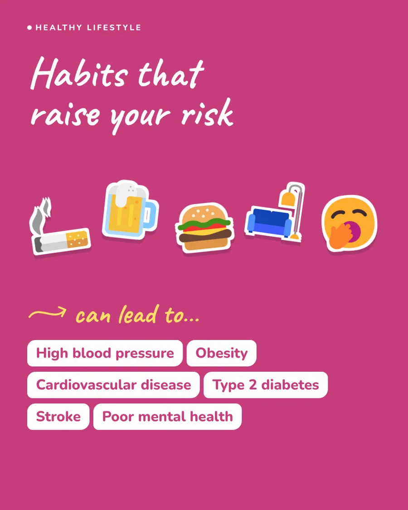
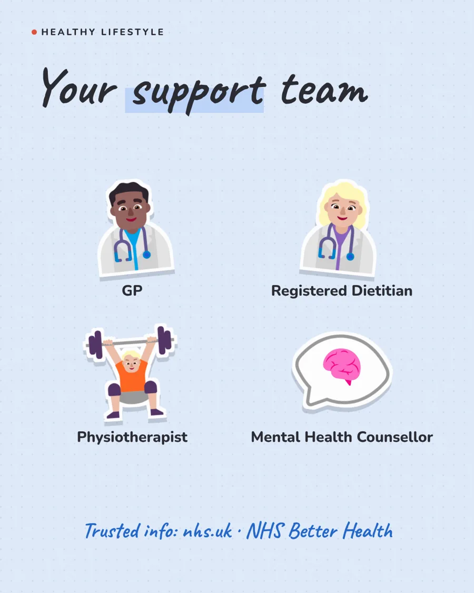

What does a healthy lifestyle really mean?
Health isn’t just the absence of illness. Here’s the full picture – and the everyday habits that make the biggest difference.
Read the guide →Quick tips
Health is more than not being ill
The WHO definition of health covers body, mind and social life. Which one needs your attention this week?

The 4 parts of Total Fitness
Physical, mental, social and medical – how balanced are yours?

4 habits that protect your health
Not smoking, sensible drinking, eating well and good sleep – what each one does for you.

Everyday habits that quietly raise your risk
Smoking, too much alcohol, ultra-processed food, sitting all day and poor sleep – and one swap to start with.

You don’t have to do it alone: your support team
GP, dietitian, physiotherapist, counsellor – who does what, and where to find trusted information.
More topics

Healthy Eating
No fads, no rules you can’t keep. The UK Eatwell Guide in plain English, plus easy swaps for real…
7 guides
Physical Activity
How much should you really move? The UK guidelines made simple, and ways to fit activity into a busy London…
7 guidesMove for Your Health
Movement is medicine. What being active does for your heart, blood sugar, mind, bones, back and lungs – and…
7 guides
Beat the Barriers
No time, no money, no confidence? Six common barriers to getting active – and a realistic fix for each…